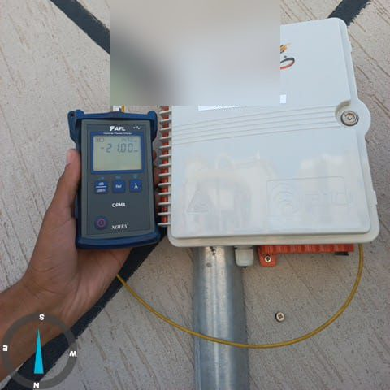
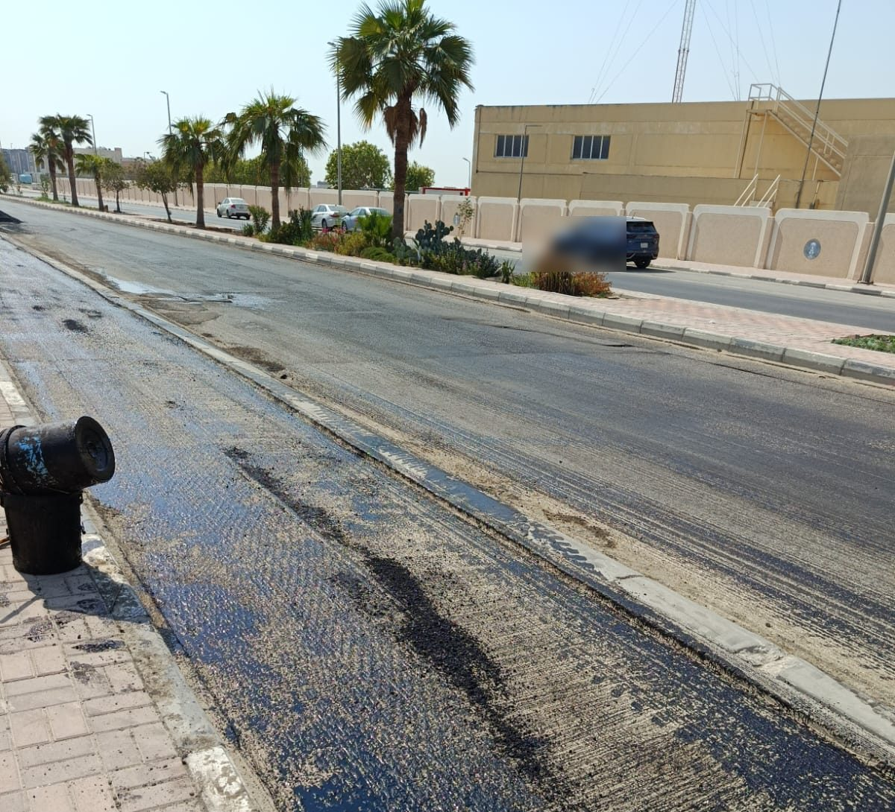

FTTH & Telecom Network Engineering
Practical network planning, design and technical support for fibre and telecom infrastructure programmes.
Discuss Your ProjectEngineering support across the delivery chain
Network Planning
Coverage strategy, capacity assumptions and rollout phasing aligned to programme objectives.
FTTH / FTTx Design
Architecture, topology, splitter hierarchy and distribution point design.
OSP / ISP Engineering
Outside-plant routes, ducts and civil works coordination plus inside-plant cabling and equipment.
Fiber Route Planning
Route optimisation, splicing plans and coordination with permits and existing utilities.
Technical Documentation
HLD, LLD, as-built drawings, method statements and handover packs.
Network Review & Optimization
Design review, quality checks and optimisation recommendations for live or planned networks.
Real FTTH work — from trench to test
Photographs from real fibre delivery environments: installation, civil reinstatement, splicing and acceptance testing.





What your team actually receives
Network Architecture
High-level design covering topology, coverage and capacity assumptions.
Route Plans
Fiber routes, civil alignment and permit-ready route documentation.
Fiber Distribution Concept
Splitter hierarchy, FDH/FDT placement and distribution point design.
BOQ Support
Quantities and material take-offs supporting procurement and estimation.
Technical Documentation
LLD, splicing schedules, method statements and as-built records.
Design Review & Deployment Support
Review reports, field coordination and commissioning readiness.
From requirements to deployment support
Requirements
Network Assessment
Design
Documentation
Review
Deployment Support
Telecom delivery at programme scale
STC National FTTH / FTTx Rollout
Senior technical and controls lead on a national fixed-network programme — design coordination, subcontractor reporting and KPI dashboards across regions.
Olympic Games City — ELV & FTTH
Lead Consultant Project Manager delivering ELV, BMS, CCTV, Fire Alarm and FTTH infrastructure for a national smart-city project.
Railway Fibre & Telecom Modernisation
Senior Site Manager implementing and testing fibre-optic networks within a live railway operating environment.
Have a fibre or telecom network project that needs engineering support?
Let's discuss the planning, design or deployment support your programme needs.
Discuss Your Project